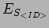
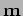

Next: Heuristic Scoring metrics (HSM)
Up: Scheduling engine
Previous: Selection Heuristic - ()
Contents
This is what works out the score for a group. Mention differing HSM metrics and combining weights- or can define Metric generator () and metric vector
which can be pushed to candidate selector
).
Steve Fraser
2008-01-31